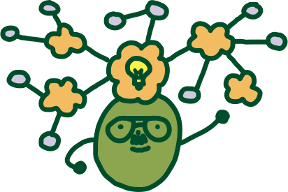

Agenda
9:30am
10:30
12:00pm
1:15
Break
1:30
3:00
Break
3:30
5:00
Break
5:30
9:30-10:30am
Kick-off + Breakfast
Sponsored by ML HR, hosted by FoL 23 team, 3rd Floor Atrium
Join us in the atrium to kick off the 2023 Festival of Learning with “Registration,” aka Make Your Own Wacky Nametag 🖍, and learn about a fun addition to the our sessions this year!
10:30-12:30pm
Workshops Session 1
Recharge Room
E14-244
Is FoL overstimulating? Stop by this room for white noise, earplugs, and gentle crafting.
Note: This room is available all day!
Chunky Hand Knitting + Crochet 101
Hosted by Kyung Yun Choi (Yun) & Rebecca Cuscaden Marvin, 3rd Floor Atrium
Settle into a cozy knitting and crocheting session! We'll knit using your arms instead of a knitting needle, or get started on your first crochet project! Learn to work with yarn to craft a bowl, tote bag, and more!
Pre-Registration Required for Hand Knitting / Drop-in for crochet!
Espresso 101
Hosted by David Simon (Black Magic Coffee Co.), Atrium kitchen
You probably know Dave as the “espresso guy” from ML Member Meetings. Come pick his brain about pulling the perfect espresso: selecting beans, grinding, tamping, milk steaming, and more!
Improv 101
Hosted by Matt Groh, E15-483
Want to learn the basics of improv? We’ll have fun making things up and being ridiculous while playing games. Improvisational Theatre is a great form of social play and no experience is required!
Nootropics
Hosted by Nathan Whitmore, E14-493
Nootropics are supplements and drugs that improve cognition! Join us to learn how they work, what kinds you can try, and try out some safe samples and cognitive tests!
Note: Bring a laptop!
How to Generate Your Own Fish
Hosted by Lingdong Huang, E15-359
We will be hosting a creative coding workshop that provides you with a step by step tutorial for generating your own fish drawing in p5.js!
Note: Bring a laptop!
Resonate with me
Hosted by Alaa Algargoosh, E15-341
Heard of Sound Tourism? Join us to learn how to recreate the sound experience of places around the world. You can also alter the properties of your voice (or any sound!) to hear how it would sound in Boston Symphony Hall and many other places and share the one that resonated with you!
Note: Bring a laptop!
Reading Tarot to Access Your Intuitive Self
Hosted by Cassie Lee, E14-514b
Use symbolism to access your intuitive, subconscious mind! Join this hands-on workshop introducing the basic structures of tarot, try your own hand at reading, and a chance to win your own new deck.
ChatGPT Oven: A Community Cookbook
Hosted by Manaswi Mishra & Kimy Lecamwasam, E14 5th floor cafe
A fun and playful workshop to explore the ChatGPT world of weird and wacky cooking recipes. We will explore the world of generative AI to explore uncharted culinary possibilities.
Note: Bring a laptop!
Inside the Yellow Box
Hosted by Conformable Decoders, YellowBox
We will bring a small group inside the Conformable Decoders cleanroom “YellowBox” and give a tour of our equipment and lab space. Participants will see first-hand how we make miniature devices.
Pre-Registration Required
12:00-1:15pm
MAS Lunch + Crazy AND Cool Pitch Session
Hosted by Andy Lippman & MAS, 3rd Floor Atrium
“Wouldn't it be awesome if we, at the Lab, did X?” In this session, Media Labbers will pitch totally crazy but cool potential projects that could spark new research. Grab your lunch, take a seat, and cheer them on!
Note: This session is streamed online to Media Lab alumni!
1:30-3:00pm
Workshops Session 2
Recharge Room
E14-244
Is FoL overstimulating? Stop by this room for white noise, earplugs, and gentle crafting.
Note: This room is available all day!
ML Community Co-Creation
Hosted by Eyal Perry & Isabella Loaiza-Saa, 3rd Floor Atrium
Make connections and add to this drop-in installation, centered around the Media Lab's new collective research topics.
Note: This activity runs all afternoon!
Body Art with Jagua Ink
Hosted by Andrea Porras, Atrium
Learn about the ink made from jagua fruit and create your own body art design! You'll leave with a body art stain “temporary tattoo” that will last up to 3 weeks.
Note: Not for anyone with a fruit allergy
Coaxing Food out of Their Shells
Hosted by Lisa Breede & Jordan Madrid, 3rd floor kitchen
Having trouble coaxing food to come out of their shells? Learn easy ways to get them to open up with food whisperers Lisa and Jordan!
Note: This session runs from 1:30-2:30pm
Latin Dancing
Hosted by Camilo Rojas & Laura Chicos, E15-483
Ready to get your spice on? We'll learn how to dance bachata & merengue! This workshop will teach the basic steps, turns, moves, and even choreographed sequences to some classic bangers that will impress everyone on the dance floor.
Existential Cafe: Bring a Philosopher to Work
Hosted by Valdemar Danry, E14-493
Are we living in a world of scientific certainty or existential uncertainty? Bring a book or a paragraph from your favorite thinker and join us for an informal session on philosophy. The session will begin with an introduction to existentialism and end with a discussion on the questions of human experience!
How to Put Almost Anything in a Browser
Hosted by Nikhil Singh, Manuel Cherep, Jess Shand, & Kimy Lecamwasam, E15-359
Want to make a fun interactive app or a visualization for thousands of audio clips? We'll demonstrate a simple and scalable approach to prototyping fully interactive web-based apps.
Note: Bring a laptop!
dj 101
Hosted by Angela Vujic (dj vlad), E15-341
Curious what's happening behind the decks? Many of the 99F DJs got started in this very class! Learn the technical basics and how to prepare your first set. ⚡️🎚🎛🎚⚡️
Note: Bring a laptop, headphones, and music (MP3, WAV, or Soundcloud or Tidal playlist!)
Drawing Humans: Character Concept Art
Hosted by Jocelyn Shen
Come join a crash course in character concept sketching! Topics will include drawing the human head and figure, conveying emotions, costumes, clothing, and more.
Note: Instruction for the first half of the session and open drawing (drop in) for the last half.
Make Your Own Pasta!
Hosted by Mitch Resnick, E14 5th floor cafe
Start with just flour and eggs, and end up with delicious pasta! Mix, knead, flatten, cut, boil, and eat! I started making my own pasta a few years ago, and I love sharing the experience with others.
Share the Love: Create + Play with LLK
Hosted by Rupal Jain & LLK, E14 LLK table
Come imagine, create, and play with us as we make interactive greeting cards to share the LOVE using the Lifelong Kindergarten Group's new mobile app (OctoStudio).
3:30-5:00pm
Workshops Session 3
Recharge Room
E14-244
Is FoL overstimulating? Stop by this room for white noise, earplugs, and gentle crafting.
Note: This room is available all day!
ML Community Co-Creation
Hosted by Eyal Perry & Isabella Loaiza-Saa, 3rd Floor Atrium
Make connections and add to this drop-in installation, centered around the Media Lab's new collective research topics.
Note: This activity runs all afternoon!
ML-Style Chinese Paper Cutting
Hosted by Liu Yang & Cathy Fang, 3rd Floor Atrium
Chinese paper cutting is widely used in celebrations such as Lunar New Year and is considered to symbolize luck and happiness. Join us as we mix the modernism style, like the Media Lab logo, and traditional Chinese paper-cut style to make beautiful creations.
Cooking the FoL Pasta Feast
Hosted by the FoL team, Atrium kitchen
Chef it up with the FoL team! Pop by the Atrium kitchen to help with the dinner preparations.
Media Lab HONK! & Parade!
Hosted by Sean Hickey, Lily Gabaree, & the ML HONK! Band, E15-483
Bringing the spirit of the annual HONK! brass band festival to the Media Lab, come build your own plastic trombone and learn how to play a brass tune (no experience necessary)! We'll finish with a musical parade around the lab!
Learn to move someone with your story
Hosted by Jimmy Day, E14-493
Attendees of this session can leave with their own 3 minute story that can help them move a listener to action. Storytellers can be researchers, staff, or faculty members, who want to tell their story in a more compelling way to support a project or cause. Feel free to bring a laptop but not required.
Type In Motion
Hosted by Vera van de Seyp, E15-359
Interested in making type move on sound or motion? With the programming language p5.js, we are going to make a typographic composition that changes when you move or speak! Session will include example code and resources needed.
Note: Bring a laptop!
How to Set Up the 99F Sound System
Hosted by Philip Tan & Don Derek Haddad, E15-341
Learn how to transport, set up, test, and pack up the Media Lab's 99F sound system! This session may also include setting up the 99F lighting system, if time permits.
Everyday Bhagavad Gita
Hosted by Alex Jung, E14-514b
Join us for an introduction to the wisdom in the ancient Hindu text Bhagavad Gita that can help us find joy, peace and balance in our everyday living.
Spicy AI: Flavorful Blends with a little help from AI
Hosted by Manvitha Ponnapati, E14 5th floor cafe
Drop in to learn the basics of blending spices, meet the volatile compounds behind flavors, and play with culinary AI models to generate new recipes. We will also try chili made with AI-generated spice combinations!
The textile arts of Batik-patterning and dyeing
Hosted by Irmandy Wicaksono, Mars Lab E14-251
Batik is a wax-resist dyeing technique originating from the Island of Java, Indonesia. In this session, we will learn about Batik and how to apply hot wax resists with canting/hand-writing. We’ll make fabric swatches to hang around the Media Lab as a temporary installation and to take home!
Note: Pre-Registration Required. This session runs from 3:30-5:30pm.